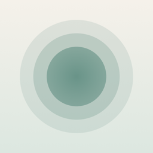

Integritetspolicy
Privacy Policy · Senast uppdaterad / Last updated: 5 nov 2026 / Nov 5, 2026
Exhale Now samlar inte in, lagrar inte på någon server, delar inte och säljer inte några personuppgifter.
Allt stannar på din iPhone. Dina sessioner och inställningar sparas bara i appen på din telefon. En liten sammanfattning (minuter i dag och den här veckan, och din rytm) delas med Exhale Nows widgetar på samma telefon.
Inga konton, ingen spårning, ingen analys. Appen har ingen inloggning, ingen reklam och ingen analyskod, och spårar dig inte mellan appar eller webbplatser.
Apple Hälsa. Om du slår på "Spara i Hälsa" sparas varje session som mindfulnessminuter i Hälsa. Exhale Now skriver bara dit och läser aldrig något från Hälsa. Hälsodata skickas aldrig någonstans och används aldrig för reklam.
Notiser. Klockan när en session är slut planeras direkt på din telefon. Ingenting skickas till oss.
Ta bort din data. Ta bort enskilda sessioner under Trädgård, eller ta bort appen för att radera allt.
Kontakt. exhalenow101@gmail.com
Exhale Now does not collect, store on a server, share or sell any personal data.
Everything stays on your iPhone. Your sessions and settings are saved only in the app on your phone. A small summary (minutes today and this week, and your rhythm) is shared with the Exhale Now widgets on the same phone.
No accounts, no tracking, no analytics. The app has no sign-in, no advertising and no analytics code, and does not track you across apps or websites.
Apple Health. If you turn on "Save to Apple Health", each session is saved to Health as Mindful Minutes. Exhale Now only writes this and never reads anything from Health. Health data is never sent anywhere or used for advertising.
Notifications. The end-of-session chime is scheduled on your phone. Nothing is sent to us.
Deleting your data. Delete individual sessions in the Garden tab, or delete the app to remove everything.
Contact. exhalenow101@gmail.com